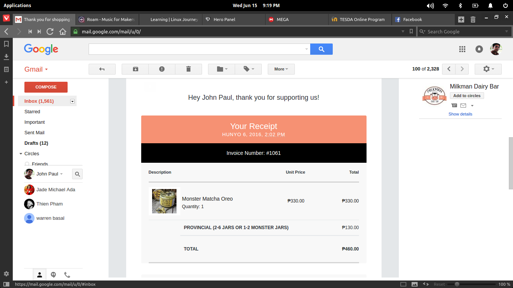
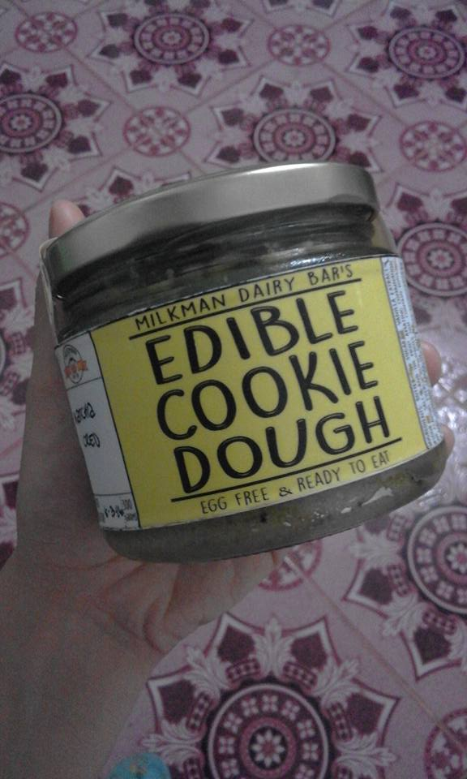
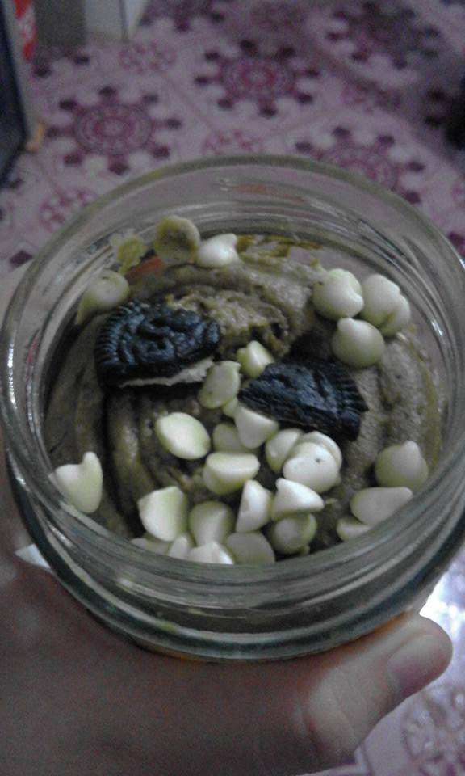

So I was scrolling through my Facebook feed like the lazy couch potato that I am when I suddenly came across a post by an old classmate. It was a picture of a jar of Milkman Dairy Bar's Matcha-flavored Edible Cookie Dough.
Remember when we were kids and we used to try to eat the dough that our moms were making and we'd get our daylights smacked right out of us? Wait, that was just me? Okay. I thought the idea of an edible cookie dough was just genius because it capitalizes on the fact that children just couldn't wait and just need to just eat that unbaked dough, an urge that borders on reflex and instinct. And we are all children at heart. So we all just want to grab that dough and experience it without having to actually bake it.
So I decided to order one "Monster" jar of it, well, at least that's how they call it.
Ordering
I went to their site and filled up the form then paid via LBC.
Receipt


After I sent them the proof of payment, they sent the package the next day. It arrived two days later.
Experience
I didn't actually experience it because I gave it to a friend who just loves matcha-flavored stuff. She said it was absolutely delicious.
 